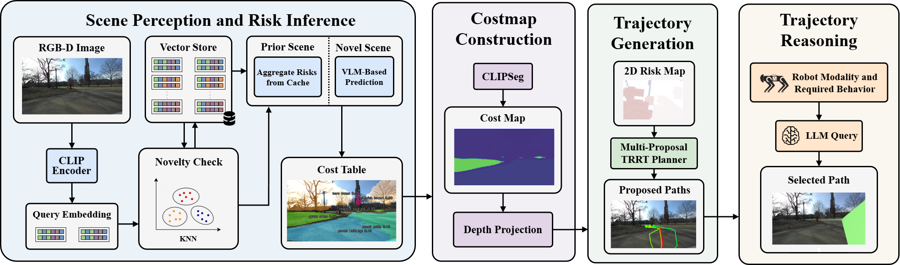
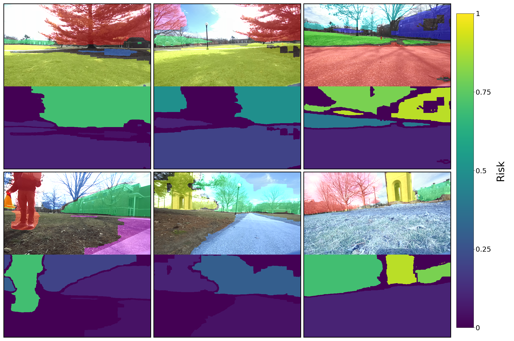
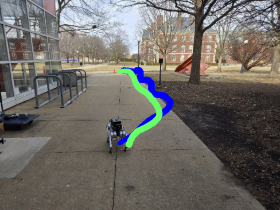
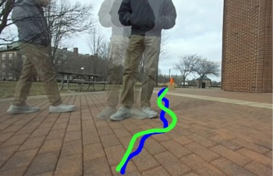
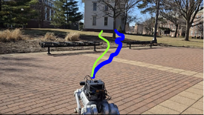
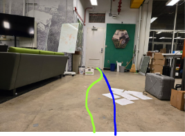
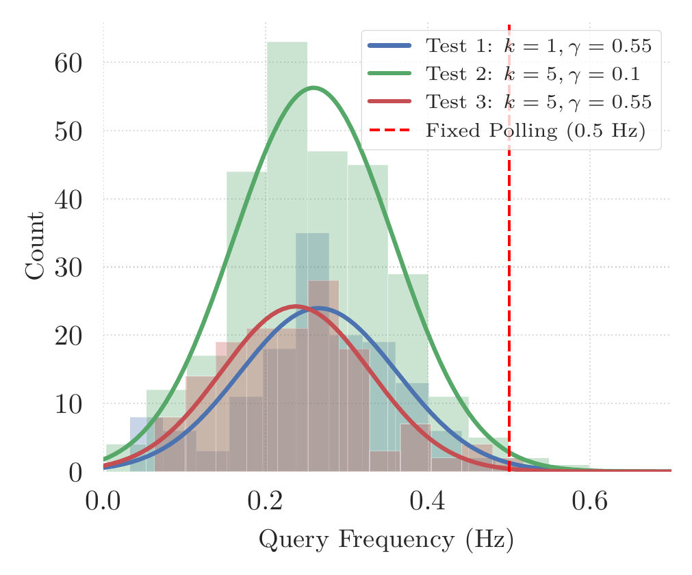

Abstract
Navigating unstructured environments requires assessing traversal risk relative to a robot's physical capabilities, a challenge that varies across embodiments. We present CATNAV, a cost-aware traversability navigation framework that leverages multimodal LLMs for zero-shot, embodiment-aware costmap generation without task-specific training. We introduce a visuosemantic caching mechanism that detects scene novelty and reuses prior risk assessments for semantically similar frames, reducing online VLM queries by 85.7%. Furthermore, we introduce a VLM-based trajectory selection module that evaluates proposals through visual reasoning to choose the safest path given behavioral constraints. We evaluate CATNAV on a quadruped robot across indoor and outdoor unstructured environments, comparing against state-of-the-art vision-language-action baselines. Across five navigation tasks, CATNAV achieves a higher average goal-reaching rate (68% vs. 58%) and 33% fewer behavioral constraint violations.
Method
CATNAV turns a single multimodal LLM into an embodiment-aware navigation stack with no task-specific training. The system makes three contributions:
- A zero-shot, embodiment-aware costmap generation framework that uses VLM semantic-consequence reasoning to infer per-object traversal risk conditioned on the robot's morphology and locomotion modality.
- A visuosemantic caching mechanism that uses CLIP embeddings and a vector store to detect semantically recurrent scenes, reusing prior risk assessments and significantly reducing online LLM query latency.
- A VLM-based trajectory reasoning module that visually evaluates multi-proposal paths overlaid on the RGB image, selecting the safest trajectory given behavioral constraints and robot capabilities.
At runtime, a novelty check (k-NN over CLIP embeddings) decides whether to query the LLM or reuse a cached risk assessment. Risk costs are segmented with CLIPSeg, projected into a 3D risk point cloud, and collapsed into a 2D occupancy grid. A TRRT planner proposes four candidate paths, which a second VLM query evaluates visually to choose the safest route under natural-language behavioral instructions.

Results
We evaluate CATNAV on a Unitree Go1 quadruped (ZED 2i stereo camera, Jetson Orin, GNSS) across five indoor and outdoor navigation tasks, comparing against the OmniVLA vision-language-action baseline over 10 trials each.

Trajectory comparisons across tasks (CATNAV vs. baseline)





BibTeX
@misc{potnis2026catnavcachedvisionlanguagetraversability,
title={CATNAV: Cached Vision-Language Traversability for Efficient Zero-Shot Robot Navigation},
author={Aditya Potnis and Francisco Affonso and Shreya Gummadi and Naveen Kumar Uppalapati and Girish Chowdhary},
year={2026},
eprint={2603.22800},
archivePrefix={arXiv},
primaryClass={cs.RO},
url={https://arxiv.org/abs/2603.22800},
}